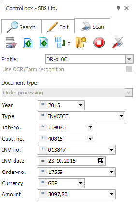
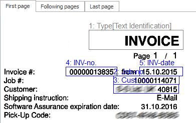
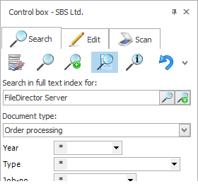

<div id="productInfo" class="content-width-wrap">
    <div id="productTitle">
        <h2>Indexing</h2>
        <div>

            <h4>Index Data For Efficient Organisation</h4>
            <br>
            <div class="content-left">
                <p>
                    FileDirector indexes content in a variety of ways. With manual indexing, you can define field characteristics that can be used to transfer field content from one document to the next. Date details can be assigned automatically or selected using a calendar option.
                </p><br>
                <p>
                    In fields with keyword lists, you can specify permitted entries and define the elements for selection in a further keyword list field. To accelerate indexing, shortcuts can also be defined for words. External data sources for fast indexing can also be linked via ODBC.
                </p><br>
            </div>
            <div class="content-right content-img"></div>
            <br><br>
            <div class="content-left content-img">
                
            </div>
            <div class="content-right">
                <p>
                    The form recognition gives you the option with zone OCR and barcodes, separately or in combination, to classify and index documents automatically. Recurring documents, such as invoices and delivery notes, can be indexed by using standard forms automatically. The relevant data is read about zones.
                </p><br>
            </div>
            <br><br>
            <div class="content-left">
                <p>
                    The full text recognition of FileDirector, together with its powerful search function, ensures that the valuable information in your documents can be retrieved. And the whole OCR text can be stored for each document archived in FileDirector, as soon as the recognised text is added to the database – regardless of the text format.
                </p>
            </div>
            <div class="content-right content-img">
                
            </div>
        </div>
